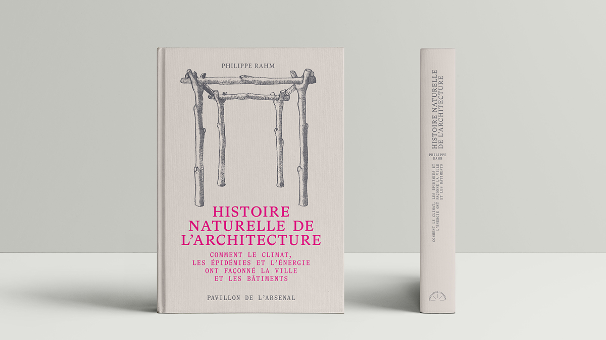
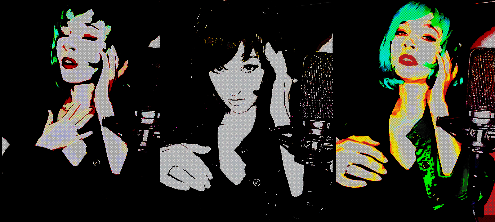
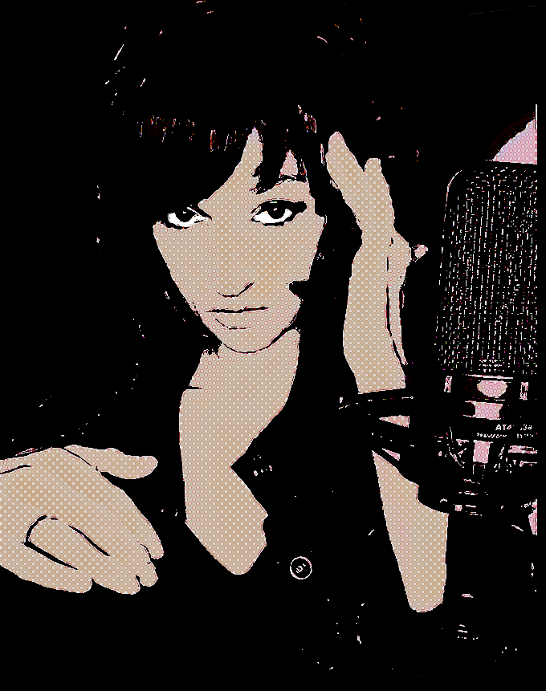
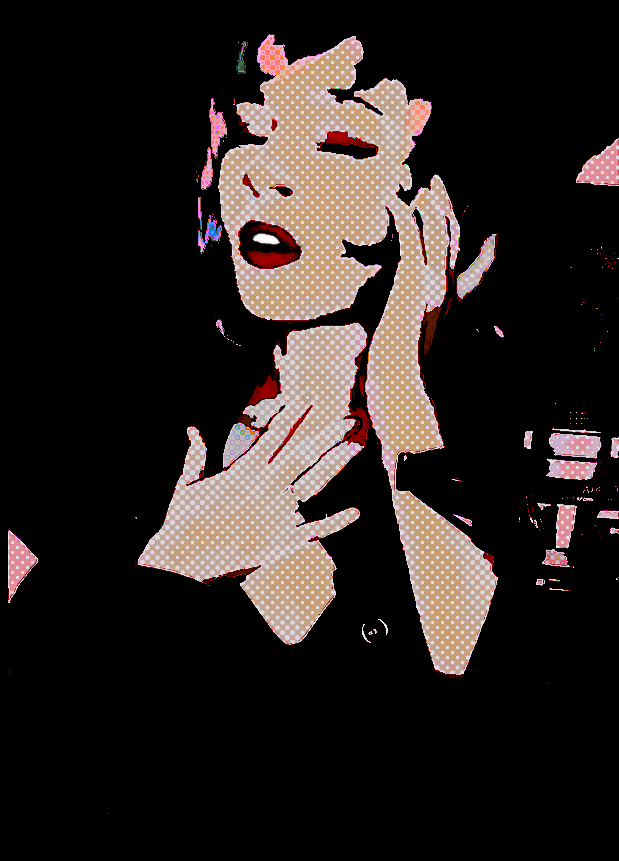
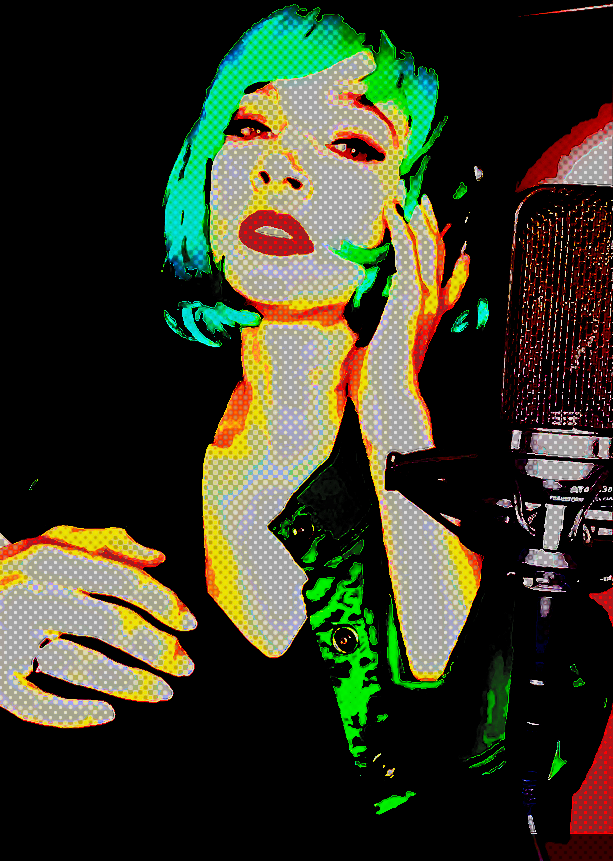
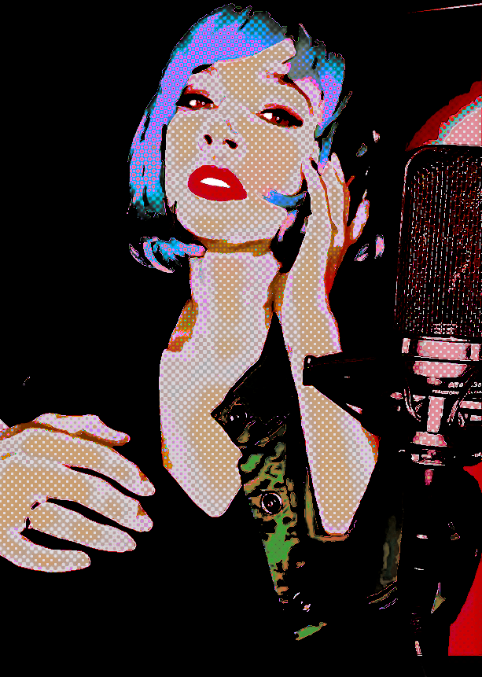
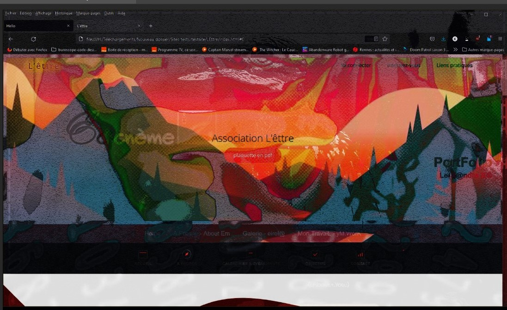
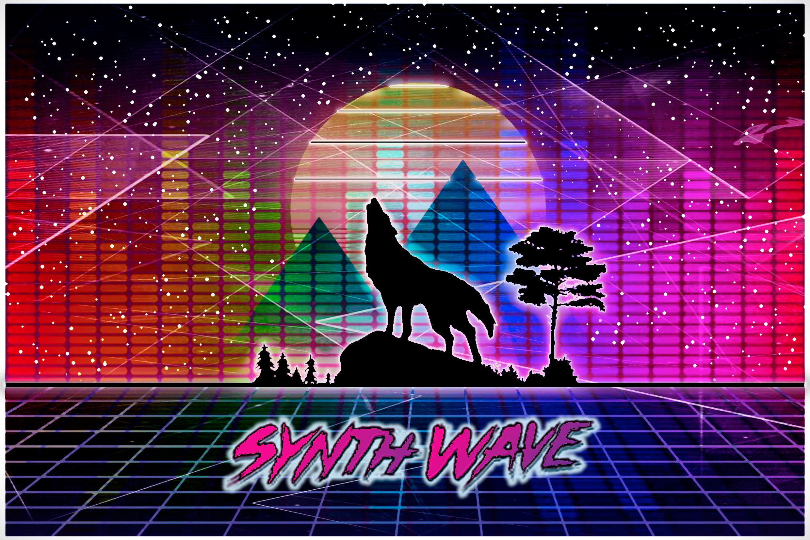

Bienvenue à l'Ouest, en Bretagne j'entends ☺
J'ai voulu axé ce projet (essai) à vous contez mes inspirations pour,
l'Architecture en somme & diverses choses que je considère reliées ☻
l'idée 1ère étant de réaliser un site simple ayant pour thème l'architecture.
Pourquoi Autant de Champs de(...'Patates Quantiques'...) Possibles
Afin d'essayer de Conceptualiser le Projet différemment et donc d'Osciller sur le Fond & la Forme,
J'ai voulu Explorer le côté Numérique du terme "Architecture" en fonction des liens, de mon expérience (mon ressenti) et de ce qui pour moi tend effectivement à de vastes questions stendhaliennes à mes yeux parfois,
quant à leurs proportions démesurées à être solutionnable ou concevable
en quelque sorte, au delà des frontières connues.
Me faisant en quelque sorte l'architecte ou tout du moins 1 conteur parmi tant d'autres,
par quelques clins d'oeils & liens disséminés / dissimulés ici & là ☻ (et quelques trappes...)
Bonne visite ;)
Etant Libre du sujet le Temps d'1 page Web, j'ai voulu essayer d'explorer 1 peu ☻
En partant d'un aspect historique et dérivant progressivement sur les aspects culturels,
(plus pluraliste et généraliste) sur ces questions.
Parfois lié parfois éloignée mais faisant partie de cet ensemble.
Tout en essayant d'apporter une accessibilité aux contenus proposés.
Origines naturelles
Pourquoi
les petits pois sont-ils à l'origine des cathédrales ?

Autant de questions que l'Histoire naturelle de l'architecture met en lumière.
Des causes naturelles, physiques, biologiques ou climatiques qui ont influencé le déroulé de l'histoire architecturale
et provoqué le surgissement de ses figures de la préhistoire à nos jours.
Sans être moralisateur,
relire l'histoire de l'architecture à partir de ces données objectives, matérielles & réelles,
permet d'affronter les défis environnementaux majeurs de notre siècle,
et de mieux construire, aujourd'hui, face à l'urgence climatique.
Induite par un contexte d'accès massif et facile à l'énergie, celle du charbon puis du pétrole (mais pas que),
et par les progrès de la médecine (avec l'invention des vaccins et des antibiotiques),
l'historiographie politique, sociale et culturelle a, au XXe siècle, largement ignoré
les faits physiques, géographiques, climatiques et bactériologiques qui ont façonné de façon décisive,
à travers les siècles,
les formes architecturales et urbaines actuelles, & à venir.
Conception
Dans cet essai j'ai voulu également partagé des réalisations récentes,
où j'ai dû réfléchir à tout cela, pour des questions d'échange culturel entre Porto & Rennes.
De la Bretagne au Portugal
j'ai cherché des liens entre les 2 pays en travaillant sur la représentation en mosaïque nommé "omega" et proposé d'autres réalisations plus personnelles.
Des Cromlech (des Almendres) aux Menhirs dire qu'il n'y a qu'1 pas est presque 1 euphémisme.
puis de Lectures en lecture...
En derniers petits liens historiques (et la date trompant presque son lecteur : 1934),
je suis tombé sur cet exemplaire :
Celui-ci parle d'architecture & de mathématiques
en plus d'être un classique des sciences sociales pour ceux ou celles qui souhaiteraient s'y plonger.
Pour le clin d'oeil de l'image du menhir & pourquoi Rennes par exemple ☻
Etant sur ce type de rapport à l'architecture, à l'histoire puis à l'art depuis plusieurs années,
cela me paraissait censé d'arborder autant de sujets à la fois.
Afin d'en dégager de plus grandes composantes qui vont autant de la théorie des Cordes à la musique par exemple qui, à mon goût contribue à une immersion encore plus profonde dès lors qu'on questionne nos sens, suivant les experts & expertes de chaque catégorie.
Approche dimensionnelle
j'en suis venu à vouloir relier par divers liens assez rapide à survoler,
des idées, des recherches & autres sujets trouvés sur le moment,
ayant pour rôle de 'cartographier' certaines notions liées.
Suivant la perception ou sensibilité de chacun,
certains des liens utilisés ont des codes visuels architecturaux intéressants (ou conception),
apportant une aura particulière à toutes ces questions.
Architectures visuelles & sonores
Chaque représentation étant unique ou propre à chacun, ce contenu pourrait avoir davantage d'exemples, propre à chacun / chacune.
Au fil des recherches à "structurer" (dans un registre différent mais pas si éloigné),
intégrer l'aspect 'musical' paraissait donc être la voie supplémentaire à donner,
ainsi qu'une clé, quit à rester sur la thématique abordée,
me servant de ce levier et de cet espace souvent comme inspiration.
Les clips dédiés étant des suggestions visuelles choisis sur l'instant présent,
cela reste un point de vue tout en proposant une critique ouverte, à la représentation de(s) monde(s) aux dimensions parfois 'utopique(s)'.
Kingdom
 
When i come home


Femme Fatale

Midnight Moonrise

(inspiration for poems & references to Emily Dickinson artist)

.jpg)
.jpg "img")


.png)
.png)
.jpg)